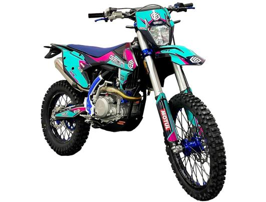

Geon Dakar GNX 300NB Motard
Ціна:
128 000 грнКлікніть для оплати
Хороший ендуро мотоцикл з об'ємом двигуна 300cc, ідеальний для для досвічених водіїв та любителів легкого позашляхового катання. Має потужний двигун і надійні амортизатори для комфортної їзди навіть у складних умовах.